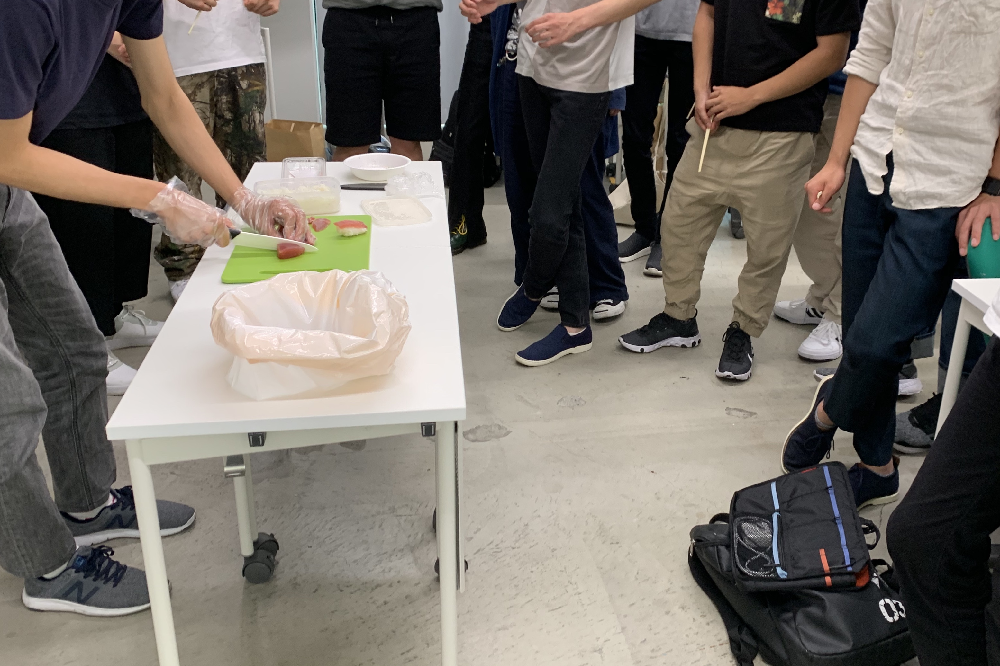

study
淡海焼
[お土産プロトタイプ]
滋賀県のお土産、淡海焼を考えました。
近江米の米粉のどら焼きで、琵琶湖の波模様の焼印です。


20200108 クロステックデザイン演習Ⅱ
Spirograph
[レーザーカッターを使ってスピログラフを作る]
ギアのデータを先生から送ってもらい、イラレで自分好みに作る。
データができたらレーザーカッターにすぐ切ってもらう！はやい！

正三角形のギアを作ろうとして歪な三角形のギアが出来上がり、
結果として立体的に見える模様がかけるギアになりました。
20191031 クロステックデザイン演習Ⅲ
分解とオートマトン
[プリンターを分解し、その部品でドローイングオートマトンを作る]
インク漏れと戦い惨敗、大変でした。なんとなく役割がわかりそうな部品から、わけのわからんものまで色んなものが詰まってました。
分解した部品はチームごとにスプレッドシートにまとめる。
様々なオートマトンを調べ、仕組みと部品からどんなものにするか考え作る。
↓参考
↓完成

頑張ったけど動きませんでした、無念
20191003~20191120 クロステックデザイン演習Ⅱ

寿司サプライズ
[サプライズ①]
大学生魚食べない問題(アンケートもとった)とクロスで楽しいことしたいなあ問題が重なり、寿司サプライズ。前日にメンバーで握った

↑寿司パフォーマンス
20190626 プランニング演習Ⅰ

今日何食べる？
[自分でアプリみたいな遊べるものを作ってみる]
今日何を食べるか迷っているときに使えるルーレット。
htmlの存在しか知らなかったので、2019年のものとは思えない感じになってるーーーー
20190624 ソフトウェア・ネットワーク演習Ⅰ

はじめてのIllustrator
[Illustratorでwebページに使えるようなアイコンを作る]
需要のないアイコンを作ってしまいました。
20190510 ソフトウェア・ネットワーク演習Ⅰ
はじめてのPhotoshop
[photoshopで写真を編集してwebページのトップ画像を作成する]
photoshopを使うと詐欺写真は簡単に作れる、と耳にしたので目玉焼きの黄身を詐欺ってを増やした。
目玉焼きを二枚焼き、


切り貼りし、いろいろごまかして完成。結構がんばりました。